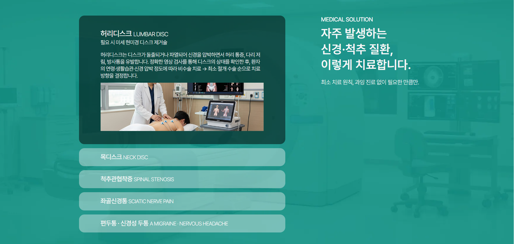

Work Detail
이젠신경외과 랜딩 페이지
신경·척추 클리닉을 소개하는 원페이지형 랜딩으로, 진료 영역·장비·후기·예약까지 한 흐름에서 전달되도록 구성했습니다.
프로젝트 개요
실제 병원이 아닌 포트폴리오용 시안을 바탕으로, 의료기관 랜딩에서 요구되는 신뢰감·가독성·문의 전환을 목표로 제작했습니다. 히어로부터 질환 안내, 장비 소개, 의료진·환자 후기, 예약 폼까지 스크롤 하나로 이어지는 구조입니다.
기획 의도
방문자가 빠르게 진료 철학과 강점을 이해하고, 불필요한 장식 없이 정보를 얻도록 섹션 순서와 카피 흐름을 잡았습니다.
- 첫 화면에서 병원 정체성과 핵심 메시지를 명확히 전달
- 질환·장비·후기로 신뢰를 쌓은 뒤 예약 폼으로 자연스럽게 연결
- 반복되는 섹션 리듬으로 스크롤 피로를 줄임
구현 방식
시맨틱한 HTML 골격 위에 유지보수하기 쉬운 CSS 구조를 두었고, 인터랙션은 jQuery로 슬라이드·탭·모달 동작을 분리해 작성했습니다.
- 반복되는 카드·그리드 패턴을 재사용 가능한 형태로 마크업
- 이미지/로고 대비와 의미 있는 alt 텍스트 반영
- 폼 라벨·동의 체크 등 기본 접근성 고려
사용 툴
협업·시각 작업과 코드 작성에 사용한 도구입니다.
FigmaVS CodeHTML5CSS3jQueryGit / GitHub
작업물 미리보기
실제 화면은 라이브 링크에서 확인하실 수 있습니다. 아래는 메인 히어로와 질환 안내(아코디언) 구역의 화면을 발췌한 것입니다.

회고
의료 랜딩은 정보 밀도가 높아질수록 시각적 무게를 줄이는 일이 중요했습니다. 디자인 시스템을 전제로 한 컴포넌트 단위 사고를 퍼블리싱에도 적용하며 이후 수정·확장 시에도 읽히는 구조를 만드는 데 집중했습니다.